Project 0: Becoming Friends with Your Camera
Part 1: Selfie - The Wrong Way vs. The Right Way
Comparing close-up distorted selfies with zoomed-in portraits taken from a distance to understand how camera distance affects facial proportions and perspective distortion.
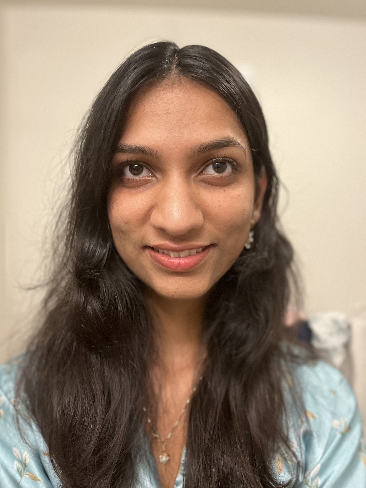
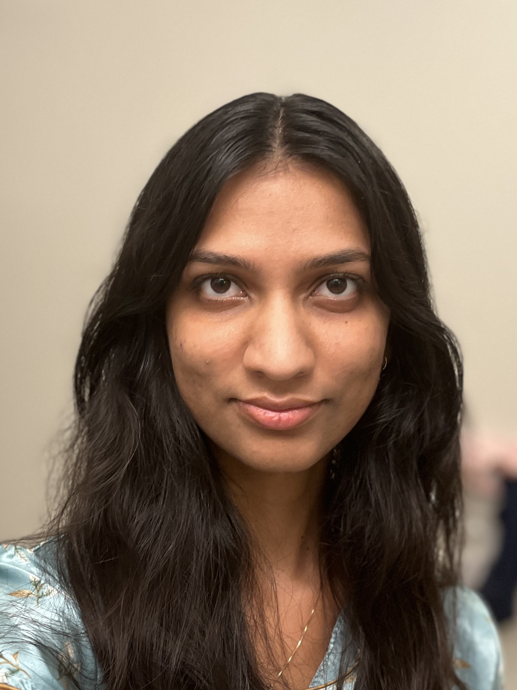
Part 2: Architectural Perspective Compression
Demonstrating perspective compression by photographing urban scenes with telephoto zoom from far away versus wide-angle shots from close up, showing how focal length affects depth perception.

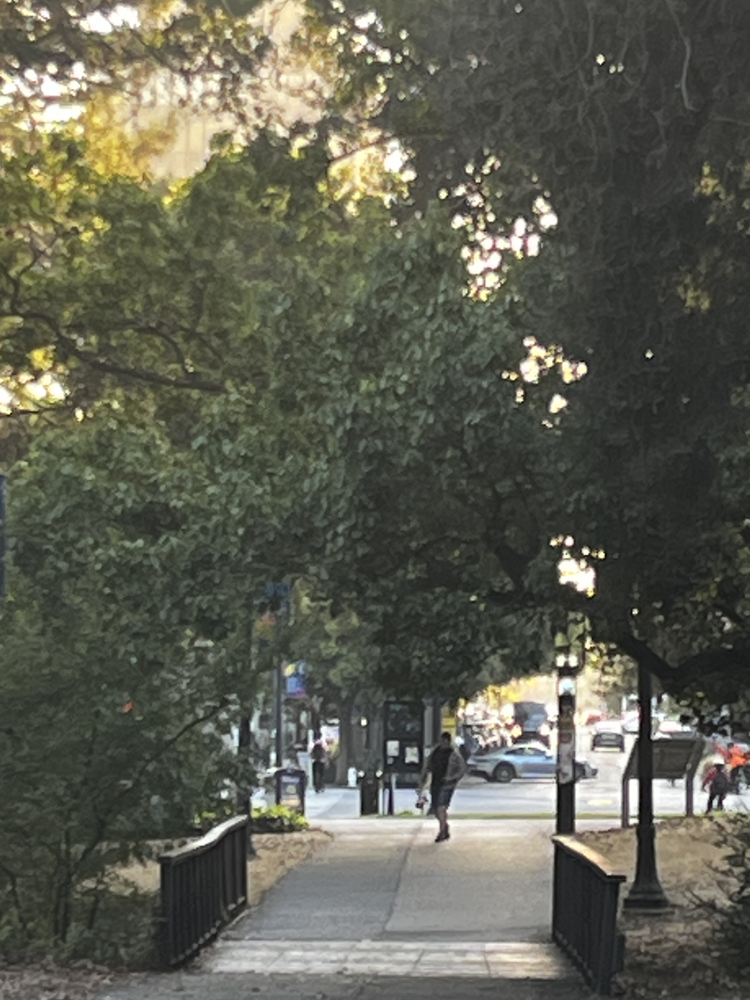
Part 3: The Dolly Zoom (Vertigo Effect)
Creating the classic "Vertigo shot" by simultaneously moving the camera backward while zooming in, maintaining subject size while dramatically changing background perspective and creating a disorienting visual effect.

Project 1: Colorizing the Prokudin-Gorskii Photo Collection
Process Overview
High-level pipeline from BGR plates to aligned RGB output.
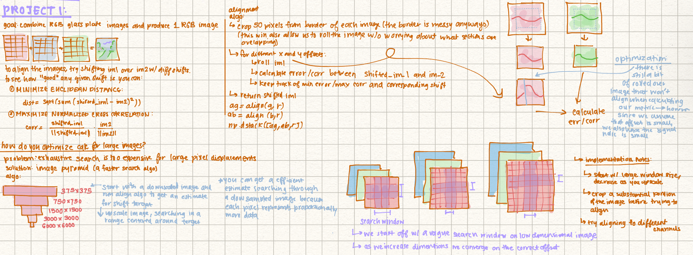
Single-Scale Alignment
Exhaustive search on small windows; aligned directly at a single scale.
For single-scale alignment, I first cropped the images to reduce the influence of noisy borders, which often caused incorrect error or correlation values. I found that I could crop away as much as 30% of the image and still achieve good alignment. I then searched over an offset range of [-15, 15] for both the x and y directions, recording the offset that minimized error (or maximized correlation) between channels. Repeating this process for the red and green channels relative to the blue channel, I then stacked the aligned results to produce the final color image.
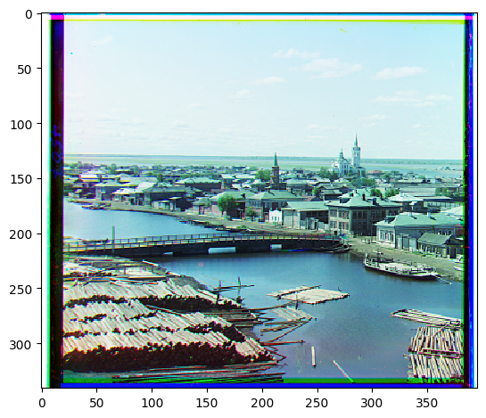
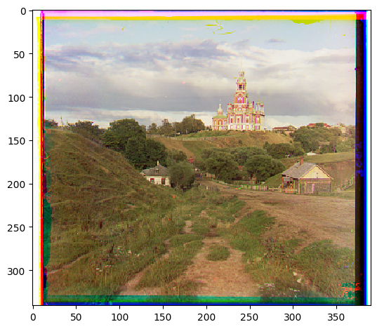
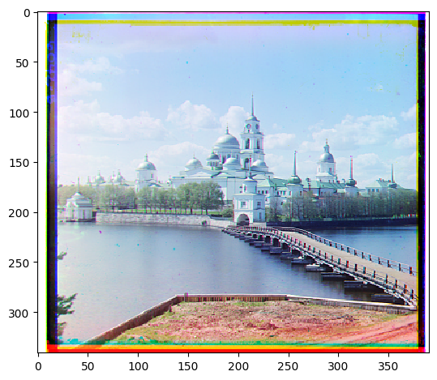
Pyramid (Coarse-to-Fine) Alignment
Multi-scale search to efficiently handle large displacements on high-resolution scans.
However, for larger images this single-scale approach became computationally inefficient, since the true misalignment could span tens or even hundreds of pixels. To address this, I implemented a pyramid alignment strategy. The idea was to first downsample the images and compute the best offset at this coarser scale, where each pixel represented a larger portion of the image. I then used this offset as the center for a smaller search window at the next higher resolution. By iteratively repeating this process through increasingly finer scales, I was able to efficiently “zoom in” on the correct offsets for alignment.
One limitation I encountered was with the Emir image, where I was unable to achieve perfect alignment across all channels. While the blue and green channels aligned well, the red channel consistently lagged behind. The main reason for this is that the red channel has a noticeably different brightness scale compared to the other two channels, making pixel intensity–based comparisons (such as L2 error or cross-correlation) less reliable.
A possible improvement would be to normalize each channel’s intensity values before alignment. For example, rescaling so that the darkest pixel maps to 0 and the brightest pixel maps to 255 (or 1.0 in floating-point representation) would ensure that all channels are compared on the same scale. This normalization step would reduce the impact of brightness differences and make correlation-based alignment more robust.
To further improve both speed and accuracy, I introduced a tiered search window strategy. At lower resolutions (coarser pyramid levels), I used a larger search window since the potential misalignments were bigger. As I moved up to higher-resolution images, I gradually decreased the search window size, which significantly reduced computation time while still refining the alignment.
I also experimented with changing the reference channel. While I primarily aligned the red and green channels to blue, I found that in some cases aligning to the green channel produced better correlation scores and visually improved results. This suggests that the choice of reference channel can matter depending on the image, especially when one channel has brightness or contrast differences (as with the Emir image).
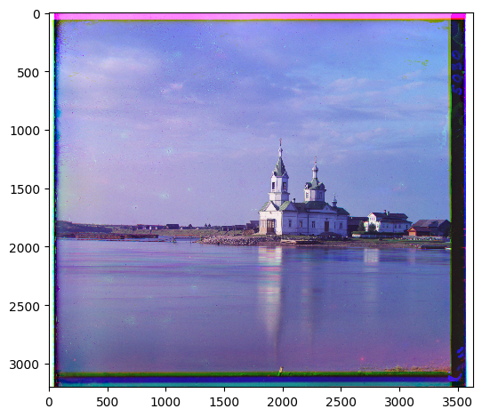
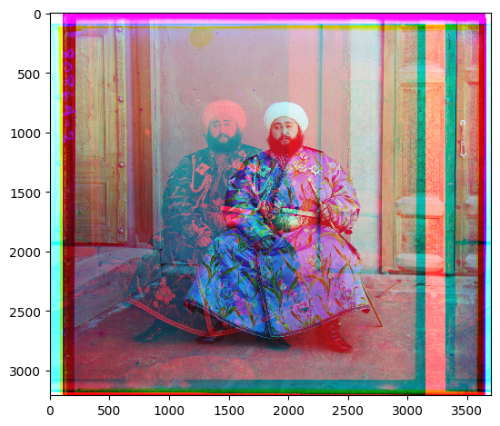
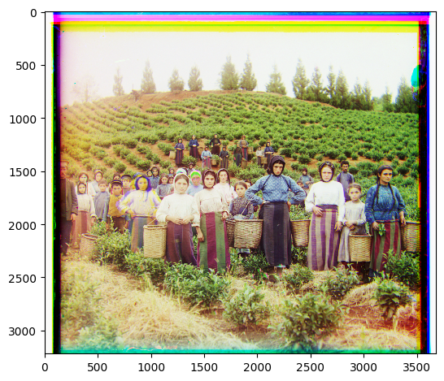
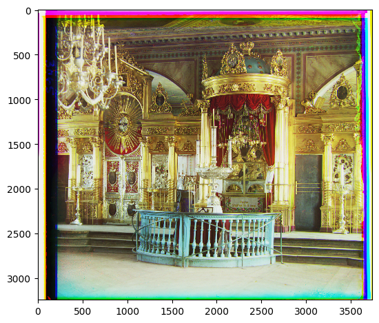
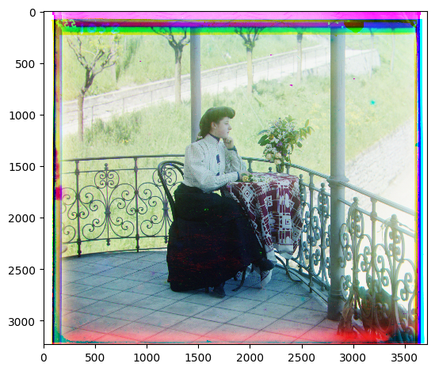
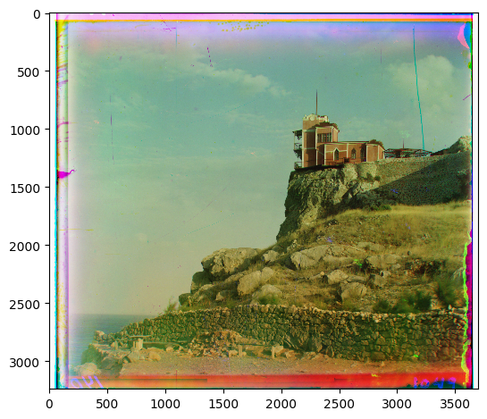
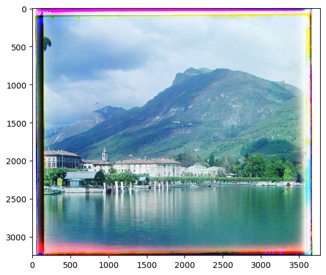
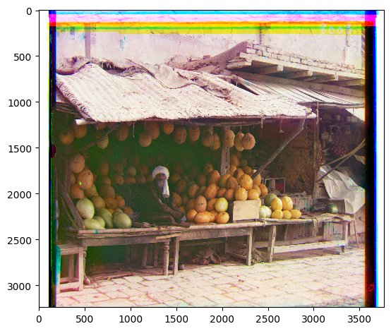
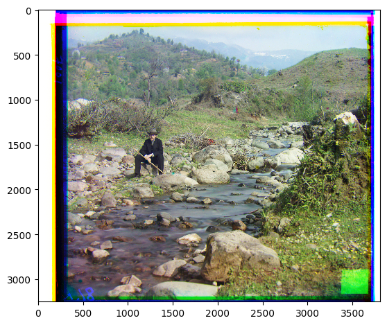
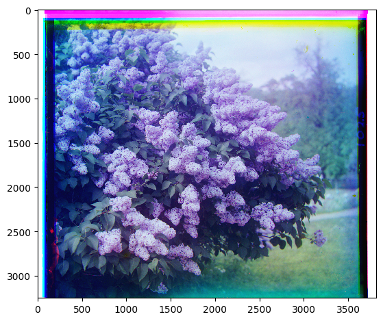
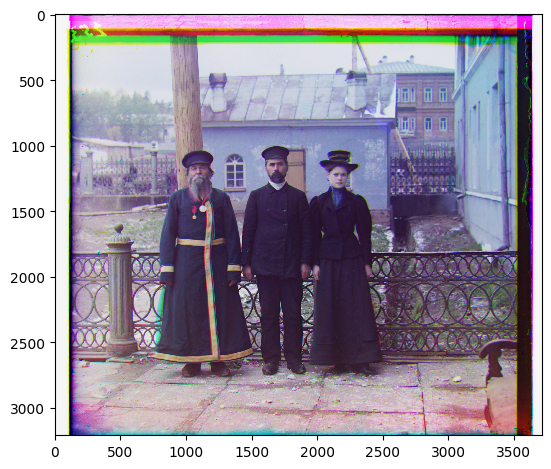
My Images
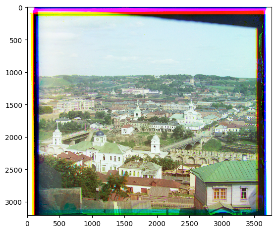
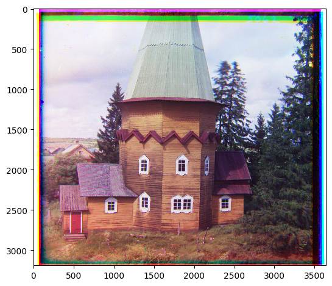
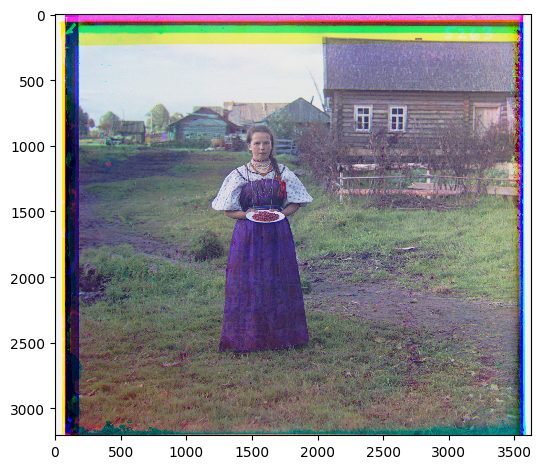
Project 2: Fun with Filters and Frequencies!
Part 1: Fun with Filters
Part 1.1: Convolutions from Scratch!
I implemented convolution first with four loops, then with two loops using array slicing. Compared with scipy.signal.convolve2d, my version produced identical results but ran more slowly due to Python loop overhead. Zero padding ensured the output size matched the input, while built-in functions offered more flexible boundary modes.
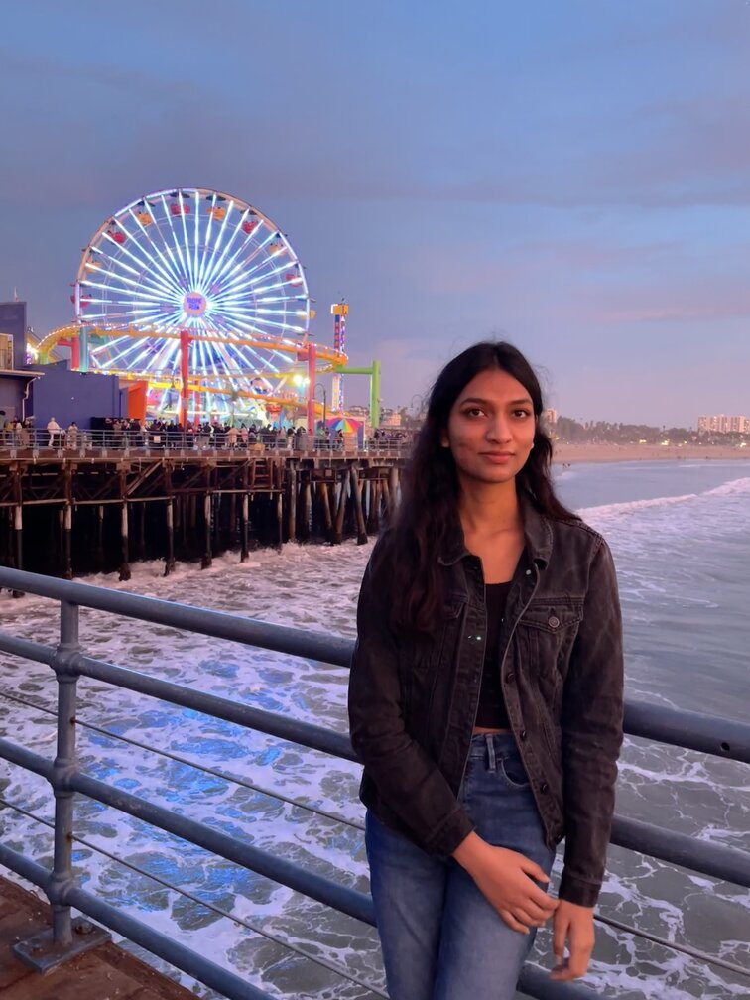
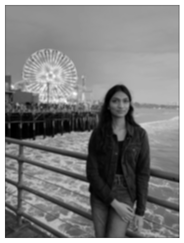
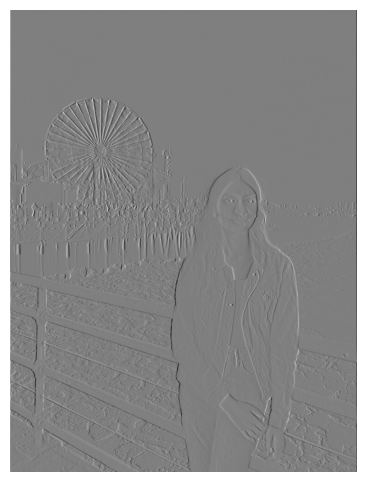
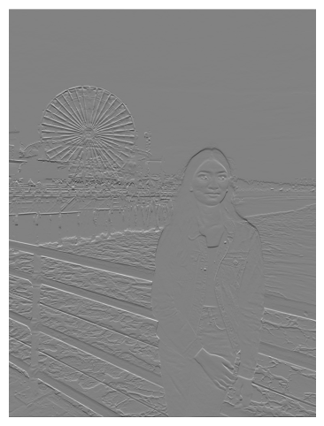
img = cv2.imread('part_1_original.jpg', cv2.IMREAD_GRAYSCALE)
box_filter = np.ones((9, 9)) / 81
dx_filter = np.array([[1, 0, -1]])
dy_filter = dx_filter.T
def conv_4loops(img, kernel):
padded = np.pad(img, ((kernel.shape[0]//2, kernel.shape[0]//2), (kernel.shape[1]//2, kernel.shape[1]//2)), mode='constant', constant_values=0)
conv_img = np.zeros_like(img)
for i in range(img.shape[0]):
for j in range(img.shape[1]):
dot_product = 0
for h in range(kernel.shape[0]):
for w in range(kernel.shape[1]):
dot_product += padded[i+h, j+w] * kernel[h, w]
conv_img[i, j] = dot_product
return conv_img
def conv_2loops(img, kernel):
padded = np.pad(img, ((kernel.shape[0]//2, kernel.shape[0]//2), (kernel.shape[1]//2, kernel.shape[1]//2)), mode='constant', constant_values=0)
conv_img = np.zeros_like(img)
for i in range(img.shape[0]):
for j in range(img.shape[1]):
conv_img[i, j] = np.sum(padded[i:i+kernel.shape[0], j:j+kernel.shape[1]] * kernel)
return conv_img
conv_img_4loops = conv_4loops(img, box_filter)
conv_img_2loops = conv_2loops(img, box_filter)
conv_img_dx_4loops = conv_4loops(img, dx_filter)
conv_img_dy_4loops = conv_4loops(img, dy_filter)
conv_img_dx_2loops = conv_2loops(img, dx_filter)
conv_img_dy_2loops = conv_2loops(img, dy_filter)
conv_img_scipy = scipy.signal.convolve2d(img, box_filter, mode='same')
conv_img_dx_scipy = scipy.signal.convolve2d(img, dx_filter, mode='same')
conv_img_dy_scipy = scipy.signal.convolve2d(img, dy_filter, mode='same')Part 1.2: Finite Difference Operator
Convolving with D_x and D_y revealed vertical and horizontal edges in the image. The gradient magnitude combined these into a strong edge response, while binarization with a tuned threshold removed noise. The chosen threshold balanced capturing fine edges while avoiding spurious noise responses.
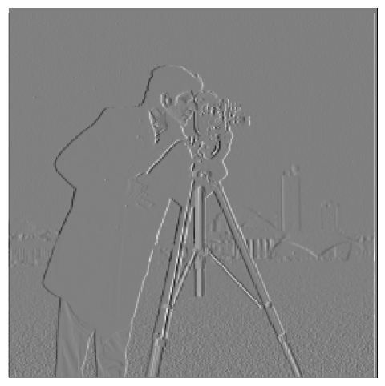
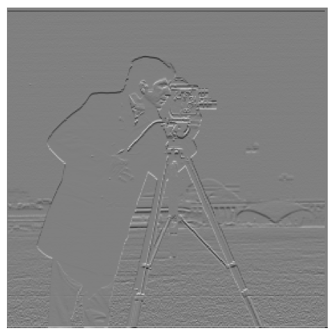
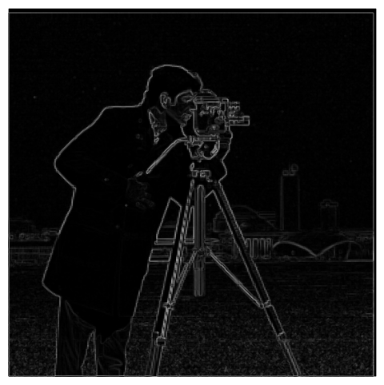
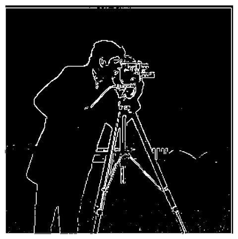
img = cv2.imread('cameraman.png', cv2.IMREAD_GRAYSCALE)
dx_filter = np.array([[1, 0, -1]]).reshape((1, 3))
dy_filter = dx_filter.T.reshape((3, 1))
camera_dx = scipy.signal.convolve2d(img, dx_filter, mode='same')
camera_dy = scipy.signal.convolve2d(img, dy_filter, mode='same')
gradient_magnitude = np.sqrt(camera_dx**2 + camera_dy**2)
threshold = 70
camera_edges = (gradient_magnitude > threshold).astype(np.uint8) * 255Part 1.3: Derivative of Gaussian (DoG) Filter
Applying a Gaussian before the finite differences reduced noise and produced smoother edge maps. Constructing DoG filters directly gave nearly identical results, verifying the equivalence of the two approaches. The DoG edges were cleaner and more continuous compared to plain finite differences.
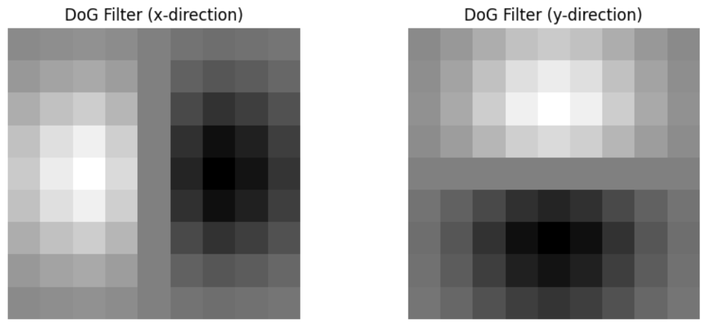
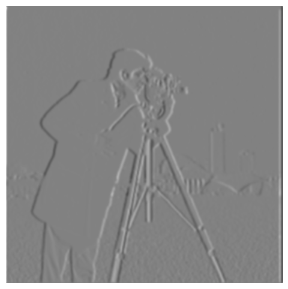
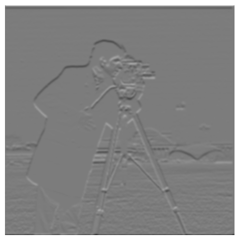
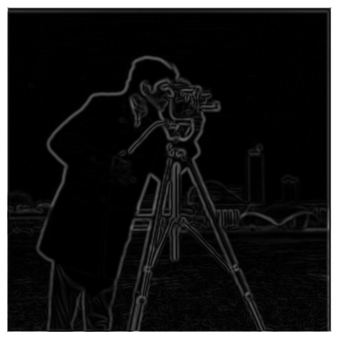
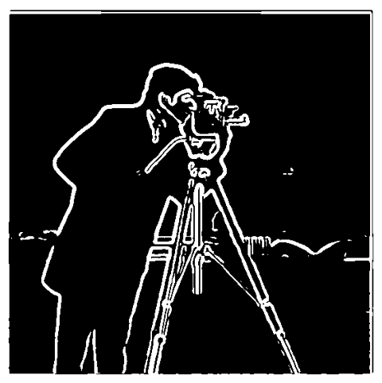
img = cv2.imread('cameraman.png', cv2.IMREAD_GRAYSCALE)
dx_filter = np.array([[1, 0, -1]]).reshape((1, 3))
dy_filter = dx_filter.T.reshape((3, 1))
# lets blur the image first
gaussian_kernel = cv2.getGaussianKernel(ksize=9, sigma=2)
gaussian_kernel = gaussian_kernel * gaussian_kernel.T
blurred = scipy.signal.convolve2d(img, gaussian_kernel, mode='same')
camera_dx = scipy.signal.convolve2d(blurred, dx_filter, mode='same')
camera_dy = scipy.signal.convolve2d(blurred, dy_filter, mode='same')
gradient_magnitude = np.sqrt(camera_dx**2 + camera_dy**2)
threshold = 25
camera_edges = (gradient_magnitude > threshold).astype(np.uint8) * 255Part 2: Fun with Frequencies!
Part 2.1: Image "Sharpening"
Unsharp masking adds back high-frequency detail by subtracting a Gaussian blur from the original and amplifying the residual. Sharpening the Taj Mahal emphasized edges and textures, while over-sharpening introduced halos. On artificially blurred images, sharpening restored detail but could not fully recover the lost crispness of the original.
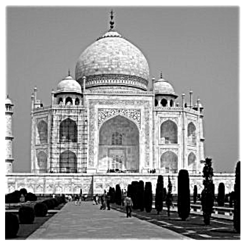
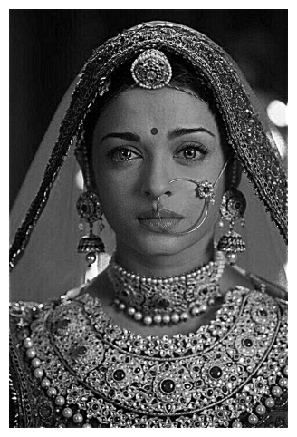
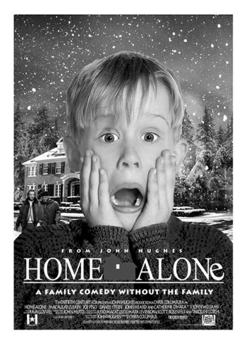
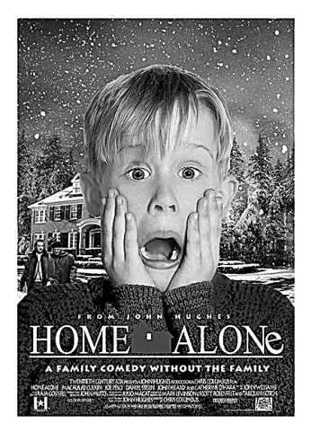
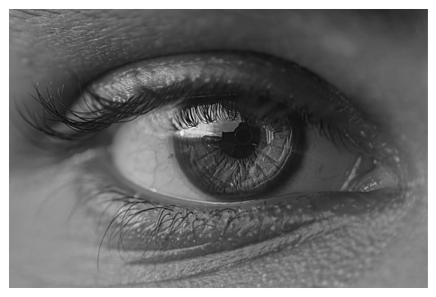
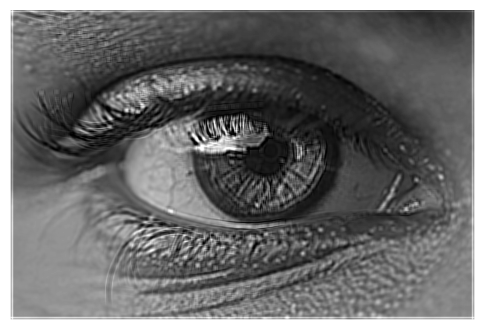
Part 2.2: Hybrid Images
I created hybrid images by low-passing one image and high-passing another, then combining them. Up close, the high frequencies dominate perception, while from a distance the low frequencies define the interpretation. Fourier analysis confirmed the frequency separation, and I found that choosing good cutoff frequencies was crucial for a clear effect.
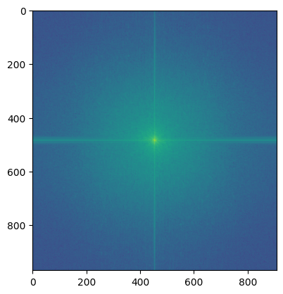
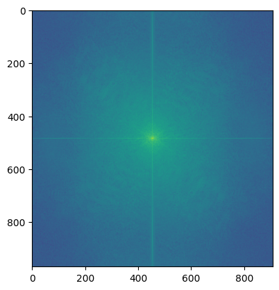
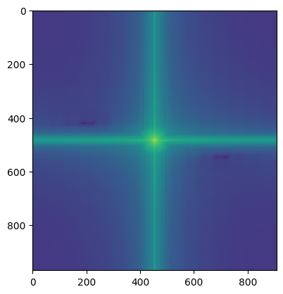
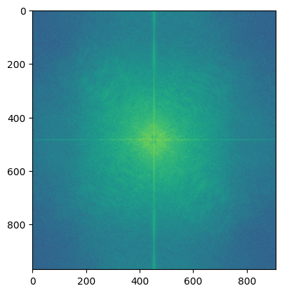
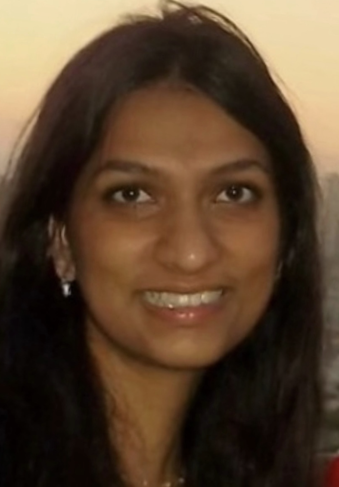
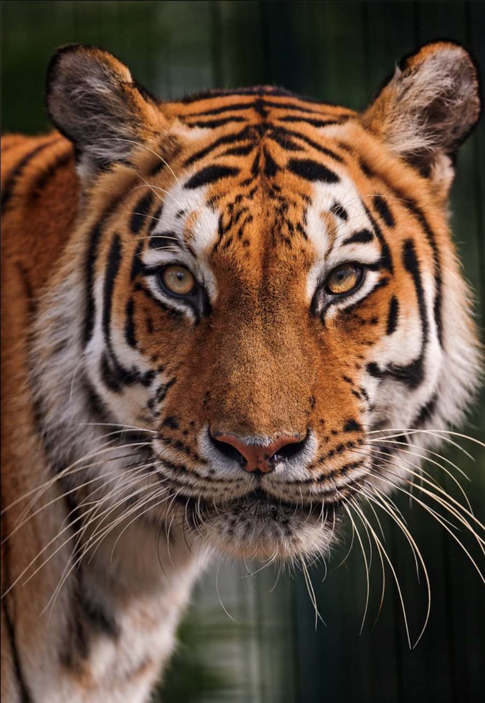
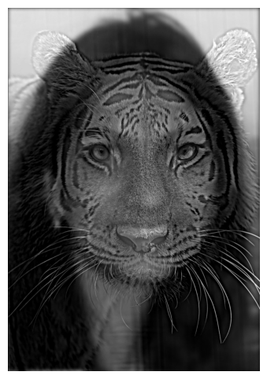
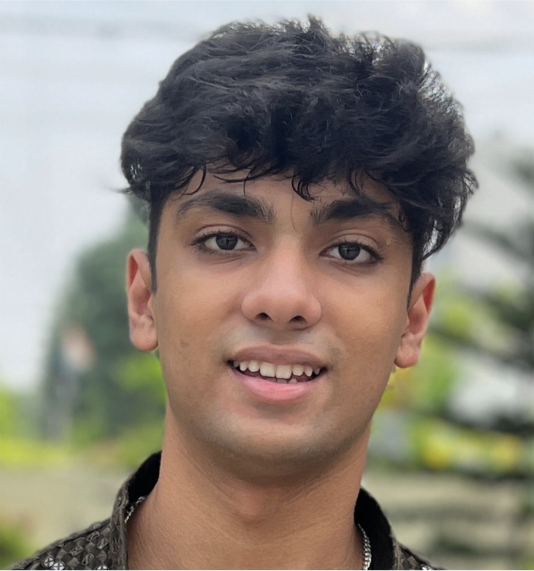
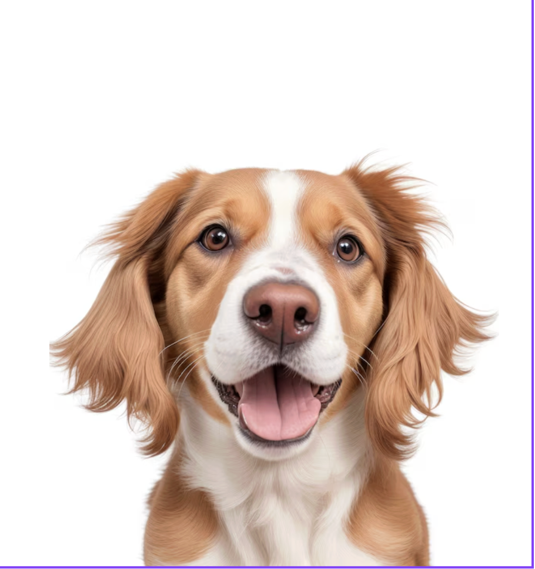
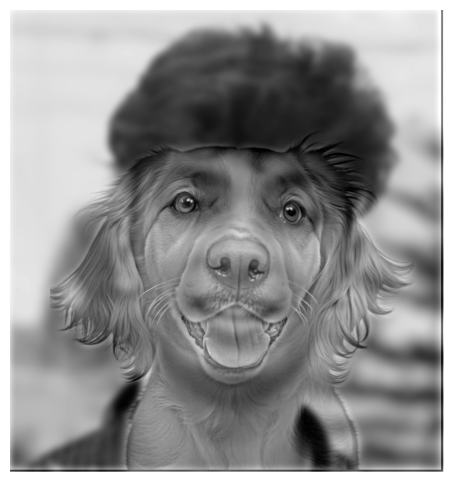
Part 2.3: Gaussian and Laplacian Stacks
Gaussian stacks progressively smoothed the images, while Laplacian stacks isolated different frequency bands. Visualizing these stacks for the apple and orange confirmed the separation of detail across scales. The stacks made it possible to reconstruct the image and later perform multi-resolution blending.
Part 2.4: Multiresolution Blending (a.k.a. the oraple!)
By applying Gaussian and Laplacian stacks with a smooth mask, I blended two images seamlessly. The blurred mask avoided sharp seams, creating smooth transitions across frequency bands. With irregular masks, I produced creative blends like merging objects into new hybrids.
Project 3: Face Morphing and Modelling a Photo Collection
Project 3A: Image Mosaicing and Homographies
Part A.1: Shoot the Pictures
I captured multiple sets of images with fixed center of projection, rotating the camera to create projective transformations between them. Each set has 40-70% overlap for effective registration.
Part A.2: Recover Homographies
I implemented computeH() to recover 3x3 homography matrices from point correspondences using least-squares solution of an overdetermined system. More than 4 correspondences were used for stability.
Homography Matrix H₁:
[[ 2.61725609e+00 3.13135381e-01 -5.70333211e+03]
[ 3.04043776e-01 2.23924757e+00 -1.03677591e+03]
[ 3.78162260e-04 4.70556190e-05 1.00000000e+00]]Homography Matrix H₂:
[[ 1.73009220e+00 -2.00144200e-01 -2.21389818e+03]
[ 4.62641636e-01 1.41287850e+00 -9.94025414e+02]
[ 1.93569379e-04 -3.01906612e-05 1.00000000e+00]]Homography Matrix H₃:
[[ 1.28216213e+00 1.43927221e-01 1.24806312e+03]
[ 3.50005871e-01 1.36329450e+00 -6.97736104e+02]
[ 7.84554293e-05 5.13390249e-05 1.00000000e+00]]Part A.3: Warp the Images
I implemented both nearest neighbor and bilinear interpolation using inverse warping. Bilinear interpolation produces smoother results with less aliasing artifacts compared to nearest neighbor, though at higher computational cost.
Part A.4: Blend the Images into a Mosaic
I created seamless mosaics using weighted averaging to reduce edge artifacts. The process involves several key steps:
Mosaic Creation Process:
1. Image Warping
Each image is warped into a common coordinate system using the computed homography matrices. This transforms the images so they align properly in the mosaic space.
2. Canvas Sizing
The mosaic canvas is sized to accommodate all warped images, with bounds calculated from the transformed corner points of each image.
3. Distance-Based Alpha Masks
For each image, I create an alpha mask that falls off linearly from the center to the edges. This ensures smooth blending by giving more weight to pixels near the center of each image and less weight to pixels near the edges.
4. Weighted Blending
Images are blended using the formula: final_pixel = Σ(alpha_i × pixel_i) / Σ(alpha_i) where alpha_i is the weight for image i at that pixel location.
5. Seamless Integration
The linear falloff of alpha masks creates smooth transitions between overlapping regions, eliminating harsh seams and creating a natural-looking panorama.
Project 3B: Automatic Image Mosaicing
Implementation of the Brown et al. paper "Multi-Image Matching using Multi-Scale Oriented Patches" for automatic feature detection, matching, and panoramic image stitching using RANSAC.
Part B.1: Harris Corner Detection
Implemented Harris Interest Point Detector for single-scale corner detection. Applied edge discarding to avoid corners near image boundaries. Used peak detection with minimum distance constraints to reduce computational load while maintaining good corner distribution.
Part B.2: Feature Descriptor Extraction
Implemented 8x8 feature descriptors extracted from 40x40 windows with Gaussian blurring for smoothness. Applied bias/gain normalization (standardization) to make descriptors robust to lighting changes. The larger sampling window provides scale-invariance and better feature discrimination.
Part B.3: Feature Matching
Implemented Lowe's ratio test for robust feature matching. Used the ratio between first and second nearest neighbor distances with a threshold of 0.7 (from Figure 6b of the paper). This approach effectively filters out ambiguous matches and improves matching quality.
Part B.4: RANSAC for Robust Homography
Manual vs Automatic Stitching Comparison
Mosaic 1: Indoor Panorama
Mosaic 2: Outdoor Scene
Mosaic 3: Wide Panorama
Project 4: Neural Radiance Field!
Part 0: Camera Calibration and 3D Scanning
Calibrating camera parameters using ArUco tags and capturing a 3D object scan for NeRF training.
Part 0.1: Camera Calibration
Using ArUco tag detection and OpenCV's calibration pipeline to determine intrinsic camera parameters and distortion coefficients from multiple calibration images.
Part 0.2: 3D Object Scan
Capturing 30-50 images of a chosen object with an ArUco tag for pose estimation and dataset creation.
Part 0.3: Camera Pose Estimation
Using the Perspective-n-Point (PnP) problem to estimate camera poses from ArUco tag detections.
Part 0.4: Dataset Creation
Undistorting images and packaging calibration results into a .npz dataset format for NeRF training.
Part 1: Fit a Neural Field to a 2D Image
Creating a neural field that represents a 2D image using an MLP with sinusoidal positional encoding.
Model Architecture
Network Structure: Width = 128, Depth = 4 layers
Learning Rate: 0.01 (1e-2)
Training Epochs: 2000 iterations
Positional Encoding: Sinusoidal PE with L=10 max frequency for coordinates
Optimizer: Adam optimizer with batch size 10k pixels
Training Progression
Neural field optimization process showing convergence on both provided and custom images.
Cat Image Training Progression
Bird Image Training Progression
Hyperparameter Analysis
Comparison of different positional encoding frequencies and network widths on the cat image.
PSNR Training Curve
Part 2: Fit a Neural Radiance Field from Multi-view Images
Implementing a complete NeRF pipeline with ray generation, sampling, and volume rendering using the Lego dataset.
Implementation Overview
The NeRF implementation consists of four key components that work together to synthesize novel views from multi-view images. First, I implemented ray generation by transforming pixel coordinates to world-space rays using camera intrinsics and extrinsics, ensuring proper handling of the camera-to-world transformation matrices. The volume sampling component discretizes each ray into sample points with added perturbation during training to prevent overfitting to fixed locations. The network architecture uses a deeper MLP with sinusoidal positional encoding for both 3D coordinates (L=10) and view directions (L=4), with skip connections to preserve input information throughout the network. Finally, volume rendering implements the discrete approximation of the continuous volume rendering equation, computing transmittance and alpha compositing to generate the final pixel colors from the sampled points along each ray.
Ray and Sample Visualization
Visualization of camera frustums, rays, and 3D sample points for validation.
Training Progression
NeRF training process showing novel view synthesis improvement over iterations on the Lego dataset.
Lego NeRF Training Progression
PSNR Training Curve
Novel View Synthesis
Spherical rendering of the Lego scene using test camera poses.
Part 2.6: Training with Your Own Data
Training NeRF on custom captured object using the dataset from Part 0.
Custom Object NeRF
Object: Bear toy captured with custom dataset from Part 0
Experimental Process and Modifications: Training NeRF on real-world data presented significant challenges that required extensive experimentation and dataset refinement. I experimented with different near and far values extensively, starting with the Lego dataset parameters (near=2.0, far=6.0) but finding they were completely inappropriate for close-range object capture. Through iterative testing, I discovered that much smaller values (near=0.02, far=0.5) worked better for my bear toy setup. The dataset creation process was particularly challenging - I had to redo Part 0 multiple times to ensure my camera calibration and pose estimation were correct. Many of my initial images had to be thrown away due to invalid ArUco tag detections, either from poor lighting, motion blur, or the tag being partially occluded. This forced me to go back and capture additional pictures with more careful attention to lighting conditions and tag visibility. The iterative process of dataset refinement, parameter tuning, and recapture taught me the importance of high-quality input data for successful NeRF training.
Training Details: Custom camera calibration with ArUco tags, optimized for close-range object capture with 64 samples per ray
Bear NeRF Training Progression
Training Loss Curve
Final Results
Novel view synthesis of the bear toy with camera rotation showing 360° views.
Project 5: Flow Matching from Scratch!
Part A: The Power of Diffusion Models!
Part 0: Setup
Text prompts and embeddings generated using Hugging Face T5 encoder clusters. Generated prompt embeddings dictionary loaded from .pth file for use throughout the project. Random seed: 100
Part 1: Sampling Loops
1.1 Implementing the Forward Process
Forward function implemented using the diffusion forward process formula. Computes noisy image by scaling the clean image with sqrt(alpha_cumprod) and adding Gaussian noise scaled by sqrt(1 - alpha_cumprod). Uses precomputed alphas_cumprod values from the scheduler.
1.2 Classical Denoising
Applied Gaussian blur filtering using torchvision.transforms.functional.gaussian_blur to attempt denoising. This classical approach struggles with high noise levels as it cannot recover semantic information lost during the forward process.
1.3 One-Step Denoising
Implemented one-step denoising using the pretrained UNet to predict noise. Computes x_0 estimate by subtracting predicted noise scaled appropriately, then uses the DDPM formula to predict the previous timestep. Results improve significantly over Gaussian blur but degrade with higher noise levels.
1.4 Iterative Denoising
Implemented iterative denoising loop using strided timesteps (starting at 990, stride of 30). At each step, predicts noise using UNet, estimates clean image x_0, then uses DDPM formula to compute next timestep with variance. Iteratively denoises from noisy image to clean image, producing much better results than one-step denoising.
1.5 Diffusion Model Sampling
Generated images from pure noise by starting with random Gaussian noise and running iterative_denoise from i_start=0. The diffusion model learns to denoise random noise into coherent images, effectively generating new samples from the learned data distribution.
1.6 Classifier-Free Guidance (CFG)
Implemented CFG by computing both conditional (with prompt) and unconditional (with empty prompt) noise estimates. Final noise estimate combines them as: uncond_noise + scale * (cond_noise - uncond_noise). This amplifies the effect of the text prompt, significantly improving image quality and alignment with the prompt at the cost of reduced diversity.
1.7 Image-to-image Translation
Implemented SDEdit algorithm: add noise to original image using forward process, then denoise with iterative_denoise_cfg. Lower noise levels preserve more of the original image structure, while higher levels allow more creative edits. The diffusion model projects the noisy image back onto the natural image manifold.
1.7.1 Editing Hand-Drawn and Web Images
Applied SDEdit to non-realistic images (web images and hand-drawn sketches). Preprocessed images to 64x64 format, then applied the same image-to-image translation process. The diffusion model effectively converts sketches and non-photorealistic images into realistic photos by projecting them onto the natural image manifold.
1.7.2 Inpainting
Implemented inpainting following the RePaint algorithm. Modified iterative_denoise_cfg to replace pixels outside the mask with the corresponding noisy pixels from the original image at each timestep. This forces the model to preserve unmasked regions while generating new content in masked areas, creating seamless inpainting results.
1.7.3 Text-Conditional Image-to-image Translation
Extended SDEdit with text conditioning by using specific prompt embeddings instead of the generic "a high quality photo". The diffusion process now guides the image projection toward the semantic content described by the text prompt, allowing controlled transformations (e.g., turning a building into a rocket ship) while maintaining the original image structure.
1.8 Visual Anagrams
Implemented visual anagrams by computing two noise estimates: one from the normal image with prompt 1, and one from the flipped image with prompt 2 (then flipped back). Averaged the two noise estimates to create a composite that looks like one prompt when viewed normally and another when flipped upside down. This creates optical illusions where the same image reveals different content based on orientation.
1.9 Hybrid Images
Implemented hybrid images using factorized diffusion. Computed noise estimates for two different prompts, then combined them by taking low frequencies (via Gaussian blur) from one estimate and high frequencies (original minus low-pass) from the other. This creates images that appear as one prompt when viewed from far away (low frequencies) and another when viewed up close (high frequencies).
Part 1: Training a Single-Step Denoising UNet
Let's warmup by building a simple one-step denoiser. Given a noisy image, we aim to train a denoiser such that it maps to a clean image. To do so, we can optimize over an L2 loss.
1.1 Implementing the UNet
In this project, we implement the denoiser as a UNet. It consists of a few downsampling and upsampling blocks with skip connections.
1.2 Using the UNet to Train a Denoiser
Recall that we aim to solve the following denoising problem: Given a noisy image, we aim to train a denoiser such that it maps to a clean image. To do so, we can optimize over an L2 loss.
1.2.1 Training
Objective: Train a denoiser to denoise noisy image with noise applied to a clean image.
Dataset and dataloader: Use the MNIST dataset via torchvision.datasets.MNIST. Train only on the training set. Shuffle the dataset before creating the dataloader. Recommended batch size: 256. We'll train over our dataset for 5 epochs.
Model: Use the UNet architecture with recommended hidden dimension D = 128.
Optimizer: Use Adam optimizer with learning rate of 1e-4.
1.2.2 Out-of-Distribution Testing
Our denoiser was trained on MNIST digits noised with specific noise levels. Let's see how the denoiser performs on different noise levels that it wasn't trained for.
1.2.3 Denoising Pure Noise
To make denoising a generative task, we'd like to be able to denoise pure, random Gaussian noise. We can think of this as starting with a blank canvas and denoising it to get a clean image.
A brief description of the patterns observed in the generated outputs and explanations for why they may exist: All generated images look the same because the model converges to the average of the training data. Without any conditioning signal (like class labels or text prompts), the model learns to predict the mean digit pattern that minimizes the loss across all possible outputs. With more epochs, this convergence to the average becomes clearer as the model becomes more confident in predicting the same average pattern for all inputs.
Part 2: Training a Flow Matching Model
We just saw that one-step denoising does not work well for generative tasks. Instead, we need to iteratively denoise the image, and we will do so with flow matching. Here, we will iteratively denoise an image by training a UNet model to predict the 'flow' from our noisy data to clean data.
2.1 Adding Time Conditioning to UNet
We need a way to inject scalar time into our UNet model to condition it. This uses a new operator called FCBlock (fully-connected block) which we use to inject the conditioning signal into the UNet.
2.2 Training the UNet
Objective: Train a time-conditioned UNet to predict the flow at given time given a noisy image and a timestep.
Dataset and dataloader: Use the MNIST dataset via torchvision.datasets.MNIST. Train only on the training set. Shuffle the dataset before creating the dataloader. Recommended batch size: 64.
Model: Use the time-conditioned UNet architecture with recommended hidden dimension D = 64.
Optimizer: Use Adam optimizer with an initial learning rate of 1e-2. We will be using an exponential learning rate decay scheduler with a gamma. This can be implemented using scheduler = torch.optim.lr_scheduler.ExponentialLR(...).
2.3 Sampling from the UNet
We can now use our UNet for iterative denoising! The results would not be perfect, but legible digits should emerge.
2.4 Adding Class-Conditioning to UNet
To make the results better and give us more control for image generation, we can also optionally condition our UNet on the class of the digit 0-9. This will require adding 2 more FCBlocks to our UNet.
2.5 Training the UNet
Training for this section will be the same as time-only, with the only difference being the conditioning vector and doing unconditional generation periodically.
2.6 Sampling from the UNet
Now we will sample with class-conditioning and will use classifier-free guidance.
Without Learning Rate Scheduler
Experimenting with removing the exponential learning rate scheduler to simplify training.
Can we get rid of the annoying learning rate scheduler? Simplicity is the best. Please try to maintain the same performance after removing the exponential learning rate scheduler. Show your visualization after training without the scheduler and provide a description of what you did to compensate for the loss of the scheduler.
To compensate for removing the exponential learning rate scheduler, I maintained the same initial learning rate (1e-2) throughout training without decay. The training curves show that without the scheduler, the model still achieves similar performance. The loss decreases steadily and the generated samples remain high quality. While the scheduler helps with fine-tuning in later epochs, a constant learning rate works well for this task, especially when training for a fixed number of epochs. The simplicity of a constant learning rate makes the training process more straightforward without significant performance degradation.